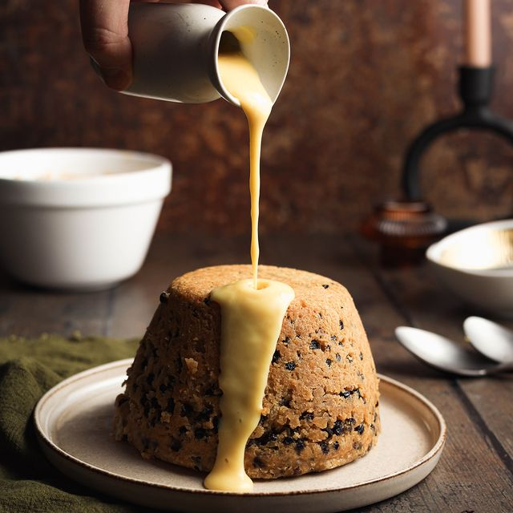
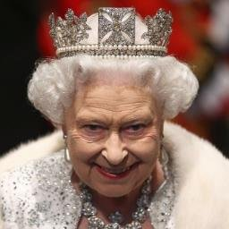
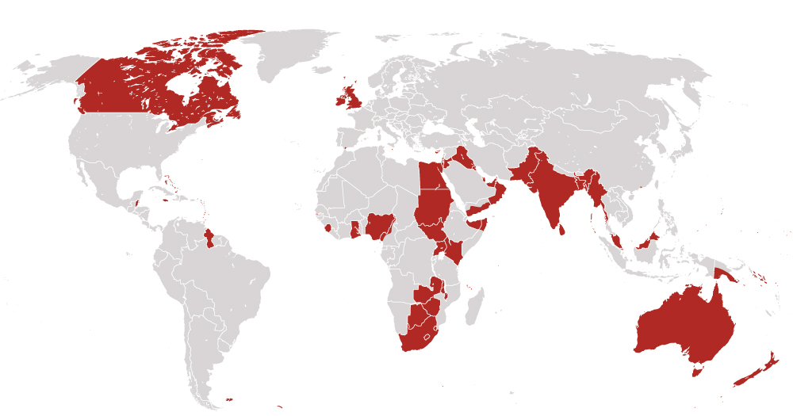

Food of the U.K
British cuisine is the heritage of cooking traditions and practices of the United Kingdom. English cuisine has distinctive attributes of its own, but also shares much with wider British cuisine, partly through the importation of ingredients and ideas from North America, China, and India during the time of the British Empire and as a result of post-war immigration. Some traditional meals, such as sausages, cheese, roasted and stewed meats, meat and game pies, boiled vegetables and broths, and freshwater and saltwater fish have ancient origins. The 14th-century English cookbook, the Forme of Cury, contains recipes for these, and dates from the royal court of Richard II.
Common English food includes: Spotted dick (shown above), Fish and Chips, Shephards pie, and Black Pudding.
Current Monarch of the U.K
Queen Elizabeth II is Queen of the United Kingdom and 14 other Commonwealth realms.
Elizabeth was born in Mayfair, London, as the first child of the Duke and Duchess of York (later King George VI and Queen Elizabeth). Her father acceded to the throne in 1936 upon the abdication of his brother, King Edward VIII, making Elizabeth the heir presumptive. She was educated privately at home and began to undertake public duties during the Second World War, serving in the Auxiliary Territorial Service. In November 1947, she married Philip Mountbatten, a former prince of Greece and Denmark, and their marriage lasted 73 years until Philip's death in 2021. They had four children: Charles, Prince of Wales; Anne, Princess Royal; Prince Andrew, Duke of York; and Prince Edward, Earl of Wessex.
The U.K empire
The British Empire was composed of the dominions, colonies, protectorates, mandates, and other territories ruled or administered by the United Kingdom and its predecessor states. It began with the overseas possessions and trading posts established by England between the late 16th and early 18th centuries. At its height it was the largest empire in history and, for over a century, was the foremost global power. By 1913 the British Empire held sway over 412 million people, 23 per cent of the world population at the time, and by 1920 it covered 35,500,000 km2 (13,700,000 sq mi), 24 per cent of the Earth's total land area. As a result, its constitutional, legal, linguistic, and cultural legacy is widespread. At the peak of its power, it was described as "the empire on which the sun never sets", as the sun was always shining on at least one of its territories.